2025 National 5 Chemistry - Paper 2 questions
Source: Scottish Qualifications Authority (SQA) / Qualifications Scotland. This is a StemInteract HTML companion, not an official HTML edition. Selectable text is supplied alongside original page images. Use the images or original PDF for equations, powers, fractions, vector notation, tables and diagrams; text extraction cannot fully preserve mathematical layout.
Jump to a question
PDF page 1
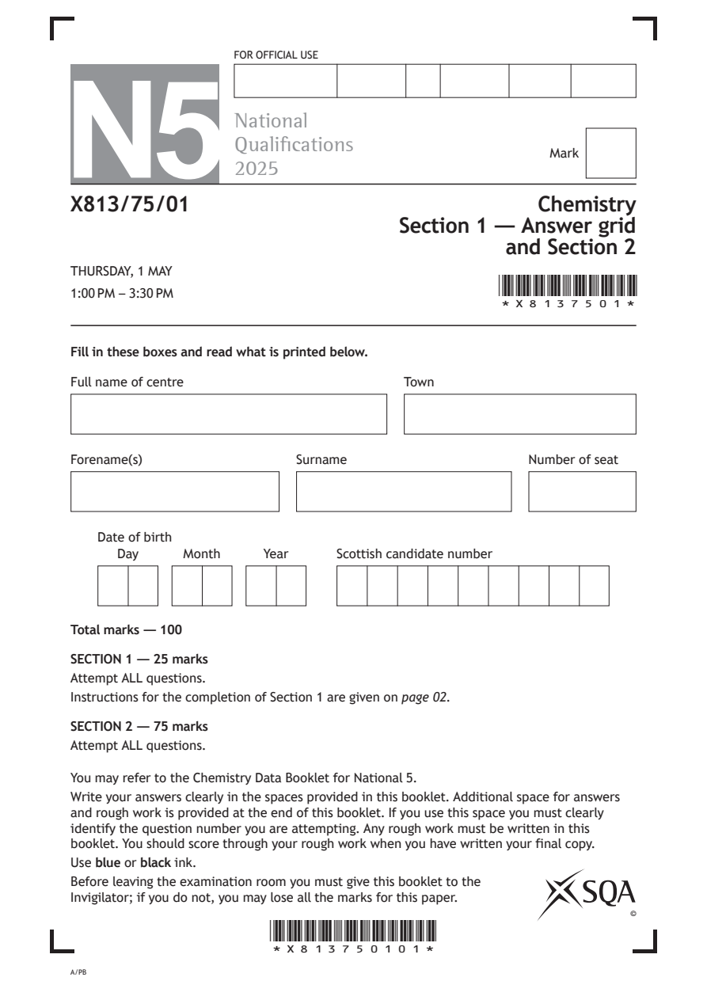
Selectable page text
FOR OFFICIAL USE
N5
National
Qualications
Mark
2025
X813/75/01 Chemistry
Section 1 — Answer grid
and Section 2
THURSDAY, 1 MAY
1:00 PM – 3:30 PM
*X8137501*
Fill in these boxes and read what is printed below.
Full name of centre Town
Forename(s) Surname Number of seat
Date of birth
Day Month Year Scottish candidate number
Total marks — 100
SECTION 1 — 25 marks
Attempt ALL questions.
Instructions for the completion of Section 1 are given on page 02.
SECTION 2 — 75 marks
Attempt ALL questions.
You may refer to the Chemistry Data Booklet for National 5.
Write your answers clearly in the spaces provided in this booklet. Additional space for answers
and rough work is provided at the end of this booklet. If you use this space you must clearly
identify the question number you are attempting. Any rough work must be written in this
booklet. You should score through your rough work when you have written your final copy.
Use blue or black ink.
Before leaving the examination room you must give this booklet to the
Invigilator; if you do not, you may lose all the marks for this paper.
©
*X813750101*
A/PBPDF page 2
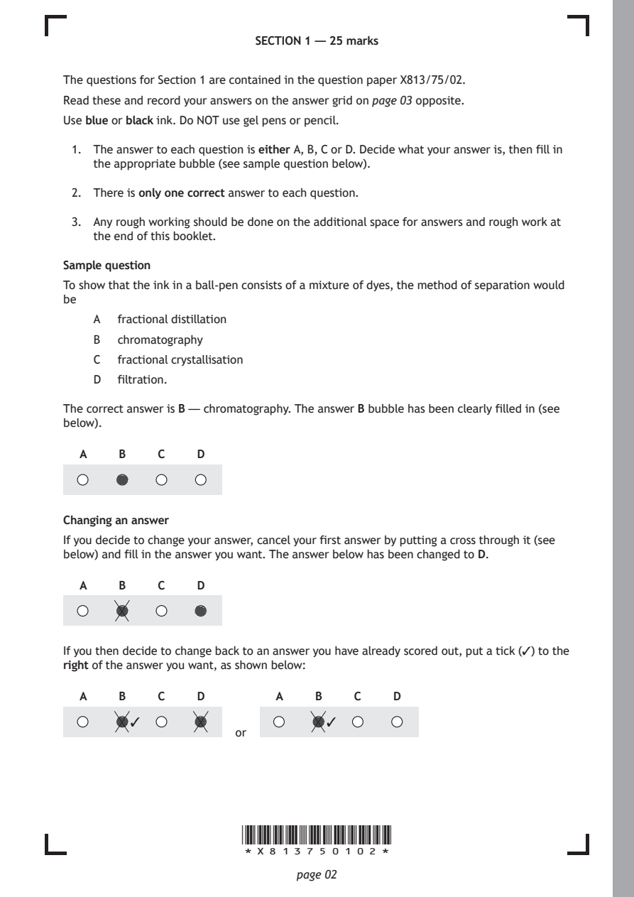
Selectable page text
SECTION 1 — 25 marks
The questions for Section 1 are contained in the question paper X813/75/02.
Read these and record your answers on the answer grid on page 03 opposite.
Use blue or black ink. Do NOT use gel pens or pencil.
1. The answer to each question is either A, B, C or D. Decide what your answer is, then fill in
the appropriate bubble (see sample question below).
2. There is only one correct answer to each question.
3. Any rough working should be done on the additional space for answers and rough work at
the end of this booklet.
Sample question
To show that the ink in a ball-pen consists of a mixture of dyes, the method of separation would
be
A fractional distillation
B chromatography
C fractional crystallisation
D filtration.
The correct answer is B — chromatography. The answer B bubble has been clearly filled in (see
below).
A B C D
Changing an answer
If you decide to change your answer, cancel your first answer by putting a cross through it (see
below) and fill in the answer you want. The answer below has been changed to D.
A B C D
If you then decide to change back to an answer you have already scored out, put a tick (✓) to the
right of the answer you want, as shown below:
A B C D A B C D
or
*X813750102*
page 02PDF page 3

Selectable page text
SECTION 1 — Answer grid
*OBJ25AD1*
A B C D
1
2
3
4
5
6
7
8
9
10
11
12
13
14
15
16
17
18
19
20
21
22
23
24
25
*X813750103*
page 03 [Turn overPDF page 4
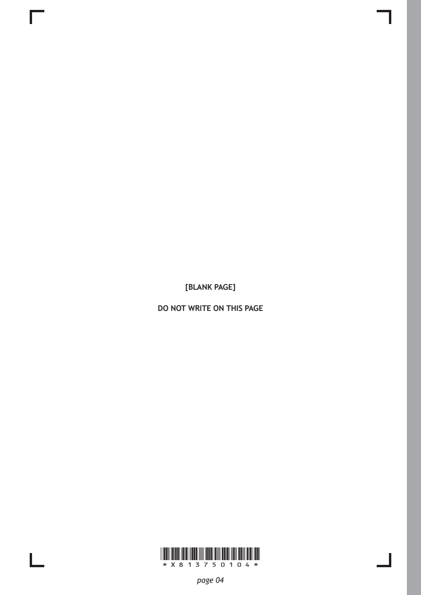
Selectable page text
[BLANK PAGE]
DO NOT WRITE ON THIS PAGE
*X813750104*
page 04PDF page 5
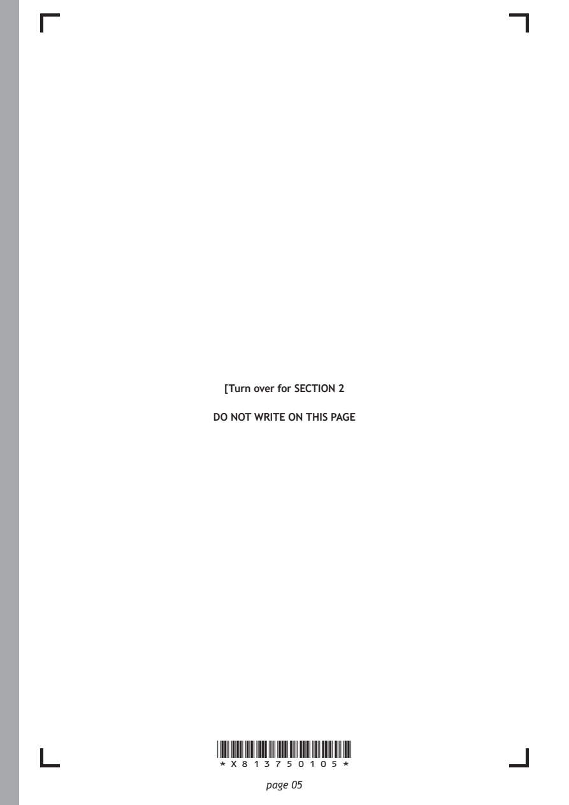
Selectable page text
[Turn over for SECTION 2
DO NOT WRITE ON THIS PAGE
*X813750105*
page 05PDF page 6
Paper 2, Question 1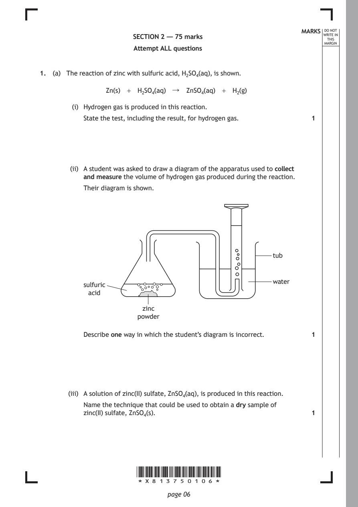
Selectable page text
MARKS _{W}^{D}_{R}^{O}_{I} _{T}^{N}OT
SECTION 2 — 75 marks E IN
THIS
MARGIN
Attempt ALL questions
1. (a) The reaction of zinc with sulfuric acid, H₂SO₄(aq), is shown.
Zn(s) + H₂SO₄(aq) ↓ ZnSO₄(aq) + H₂(g)
(i) Hydrogen gas is produced in this reaction.
State the test, including the result, for hydrogen gas. 1
(ii) A student was asked to draw a diagram of the apparatus used to collect
and measure the volume of hydrogen gas produced during the reaction.
Their diagram is shown.
tub
water
sulfuric
acid
zinc
powder
Describe one way in which the student’s diagram is incorrect. 1
(iii) A solution of zinc(II) sulfate, ZnSO₄(aq), is produced in this reaction.
Name the technique that could be used to obtain a dry sample of
zinc(II) sulfate, ZnSO₄(s). 1
*X813750106*
page 06PDF page 7
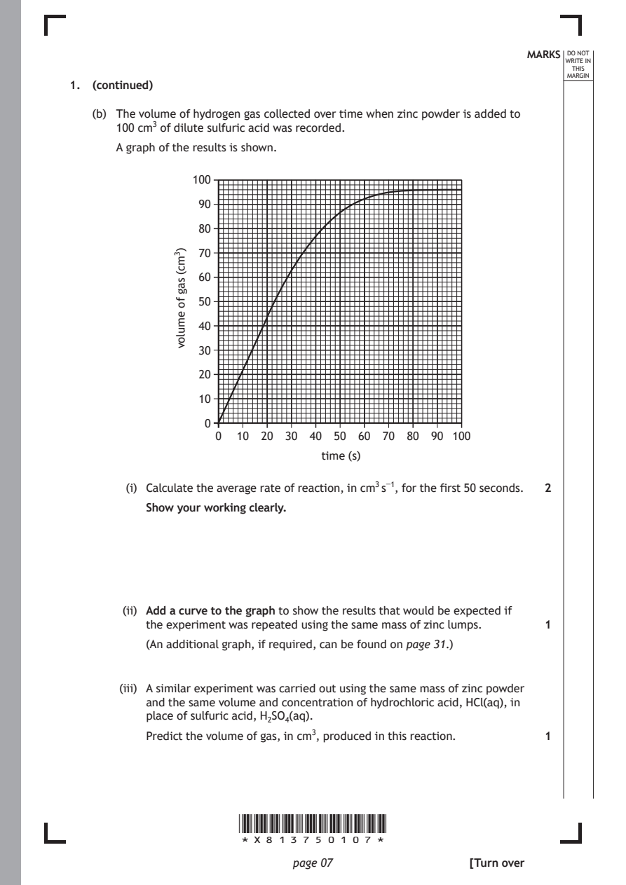
Selectable page text
MARKS _{W}^{D}_{R}^{O}_{I} _{T}^{N}OT
E IN
THIS
MARGIN
1. (continued)
(b) The volume of hydrogen gas collected over time when zinc powder is added to
100 cm³ of dilute sulfuric acid was recorded.
A graph of the results is shown.
time (s)
*X813750107*
page 07
)3mc(
sag
fo
emulov
100
90
80
70
60
50
40
30
20
10
0
0 10 20 30 40 50 60 70 80 90 100
(i) Calculate the average rate of reaction, in cm³ s⁻¹, for the first 50 seconds. 2
Show your working clearly.
(ii) Add a curve to the graph to show the results that would be expected if
the experiment was repeated using the same mass of zinc lumps. 1
(An additional graph, if required, can be found on page 31.)
(iii) A similar experiment was carried out using the same mass of zinc powder
and the same volume and concentration of hydrochloric acid, HCl(aq), in
place of sulfuric acid, H₂SO₄(aq).
Predict the volume of gas, in cm³, produced in this reaction. 1
[Turn overPDF page 8
Paper 2, Question 2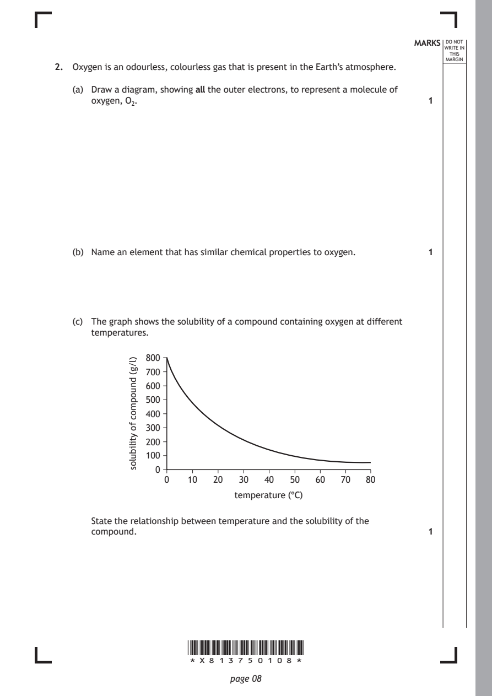
Selectable page text
MARKS _{W}^{D}_{R}^{O}_{I} _{T}^{N}OT
E IN
THIS
MARGIN
2. Oxygen is an odourless, colourless gas that is present in the Earth’s atmosphere.
(a) Draw a diagram, showing all the outer electrons, to represent a molecule of
oxygen, O₂.
(b) Name an element that has similar chemical properties to oxygen.
(c) The graph shows the solubility of a compound containing oxygen at different
temperatures.
800
700
600
500
400
300
200
100
0
0 10 20 30 40
temperature (°C)
*X813750108*
page 08
)l/g(
dnuopmoc
fo
ytilibulos
1
1
50 60 70 80
State the relationship between temperature and the solubility of the
compound. 1PDF page 9
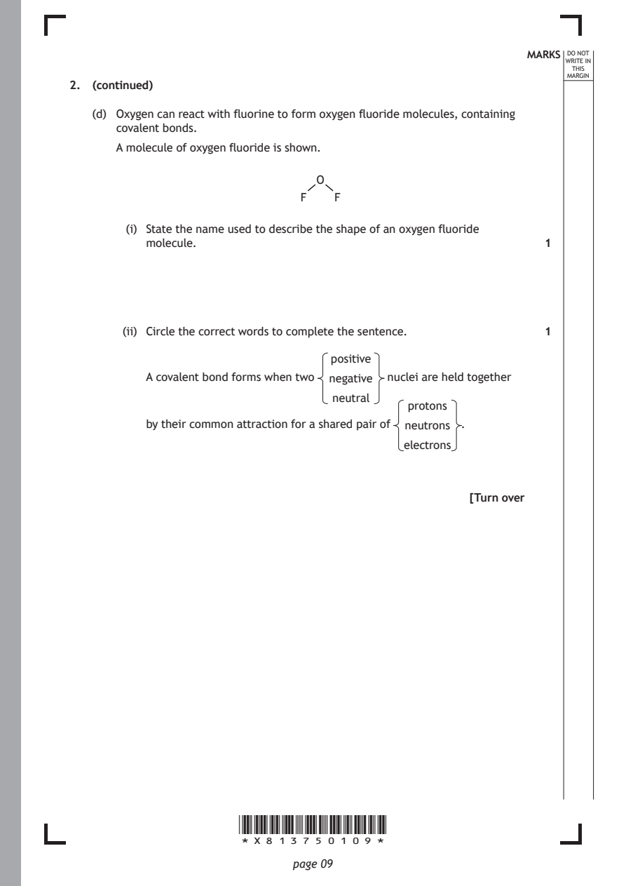
Selectable page text
MARKS _{W}^{D}_{R}^{O}_{I} _{T}^{N}OT
E IN
THIS
MARGIN
2. (continued)
(d) Oxygen can react with fluorine to form oxygen fluoride molecules, containing
covalent bonds.
A molecule of oxygen fluoride is shown.
O
F F
(i) State the name used to describe the shape of an oxygen fluoride
molecule. 1
(ii) Circle the correct words to complete the sentence. 1
positive
A covalent bond forms when two negative nuclei are held together
neutral
protons
by their common attraction for a shared pair of neutrons .
electrons
[Turn over
*X813750109*
page 09PDF page 10
Paper 2, Question 3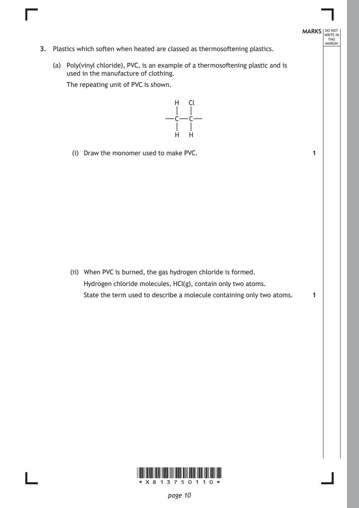
Selectable page text
MARKS _{W}^{D}_{R}^{O}_{I} _{T}^{N}OT
E IN
THIS
MARGIN
3. Plastics which soften when heated are classed as thermosoftening plastics.
(a) Poly(vinyl chloride), PVC, is an example of a thermosoftening plastic and is
used in the manufacture of clothing.
The repeating unit of PVC is shown.
H Cl
C C
H H
(i) Draw the monomer used to make PVC. 1
(ii) When PVC is burned, the gas hydrogen chloride is formed.
Hydrogen chloride molecules, HCl(g), contain only two atoms.
State the term used to describe a molecule containing only two atoms. 1
*X813750110*
page 10PDF page 11
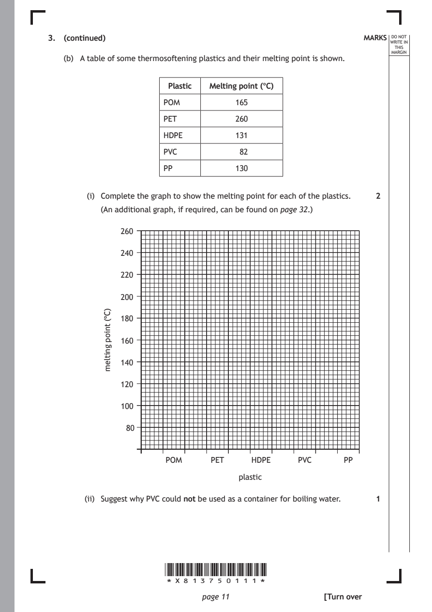
Selectable page text
3. (continued) MARKS _{W}^{D}_{R}^{O}_{I} _{T}^{N}OT
E IN
THIS
MARGIN
(b) A table of some thermosoftening plastics and their melting point is shown.
Plastic Melting point (°C)
POM 165
PET 260
HDPE 131
PVC 82
PP 130
(i) Complete the graph to show the melting point for each of the plastics.
(An additional graph, if required, can be found on page 32.)
POM PET HDPE PVC PP
plastic
*X813750111*
page 11
)C°(
tniop
gnitlem
2
260
240
220
200
180
160
140
120
100
80
(ii) Suggest why PVC could not be used as a container for boiling water. 1
[Turn overPDF page 12
Paper 2, Question 4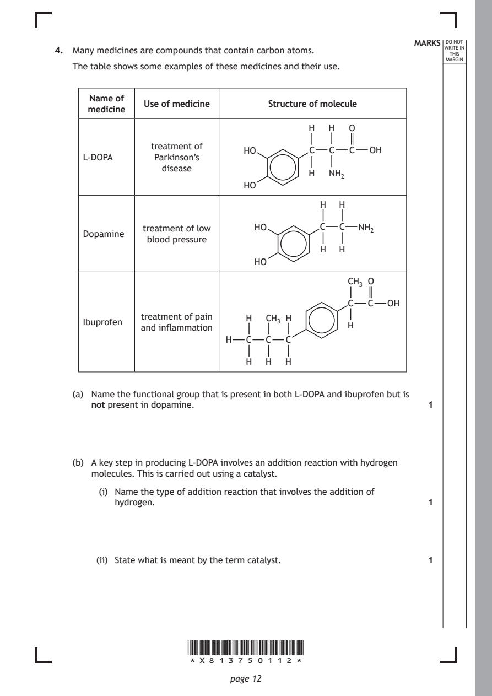
Selectable page text
MARKS _{W}^{D}_{R}^{O}_{I} _{T}^{N}OT
4. Many medicines are compounds that contain carbon atoms. E IN
THIS
MARGIN
The table shows some examples of these medicines and their use.
Name of
Use of medicine Structure of molecule
medicine
H H O
treatment of
HO C C C OH
L-DOPA Parkinson’s
disease
H NH₂
HO
H H
treatment of low HO C C NH₂
Dopamine
blood pressure
H H
HO
CH₃ O
C C OH
treatment of pain H CH₃ H
Ibuprofen
and inflammation H
H C C C
H H H
(a) Name the functional group that is present in both L-DOPA and ibuprofen but is
not present in dopamine. 1
(b) A key step in producing L-DOPA involves an addition reaction with hydrogen
molecules. This is carried out using a catalyst.
(i) Name the type of addition reaction that involves the addition of
hydrogen. 1
(ii) State what is meant by the term catalyst. 1
*X813750112*
page 12PDF page 13
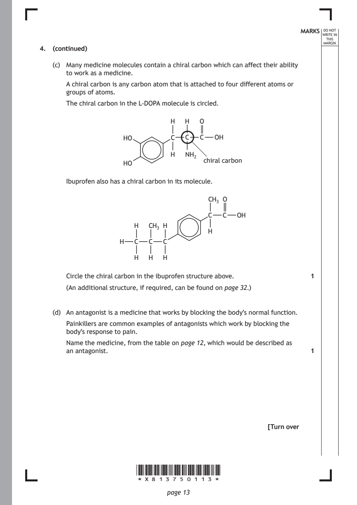
Selectable page text
MARKS _{W}^{D}_{R}^{O}_{I} _{T}^{N}OT
E IN
THIS
MARGIN
4. (continued)
(c) Many medicine molecules contain a chiral carbon which can affect their ability
to work as a medicine.
A chiral carbon is any carbon atom that is attached to four different atoms or
groups of atoms.
The chiral carbon in the L-DOPA molecule is circled.
H H O
HO C C C OH
H NH₂
chiral carbon
HO
Ibuprofen also has a chiral carbon in its molecule.
CH₃ O
C C OH
H CH₃ H
H
H C C C
H H H
Circle the chiral carbon in the ibuprofen structure above. 1
(An additional structure, if required, can be found on page 32.)
(d) An antagonist is a medicine that works by blocking the body’s normal function.
Painkillers are common examples of antagonists which work by blocking the
body’s response to pain.
Name the medicine, from the table on page 12, which would be described as
an antagonist. 1
[Turn over
*X813750113*
page 13PDF page 14
Paper 2, Question 5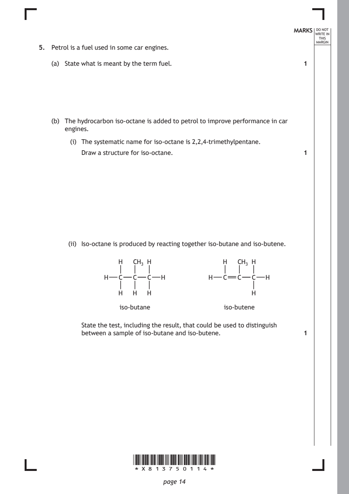
Selectable page text
MARKS _{W}^{D}_{R}^{O}_{I} _{T}^{N}OT
E IN
THIS
MARGIN
5. Petrol is a fuel used in some car engines.
(a) State what is meant by the term fuel. 1
(b) The hydrocarbon iso-octane is added to petrol to improve performance in car
engines.
(i) The systematic name for iso-octane is 2,2,4-trimethylpentane.
Draw a structure for iso-octane. 1
(ii) Iso-octane is produced by reacting together iso-butane and iso-butene.
H CH₃ H H CH₃ H
H C C C H H C C C H
H H H H
iso-butane iso-butene
State the test, including the result, that could be used to distinguish
between a sample of iso-butane and iso-butene. 1
*X813750114*
page 14PDF page 15
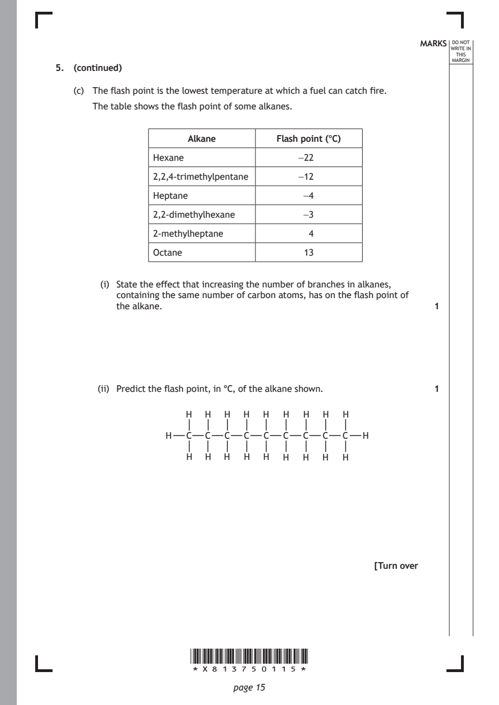
Selectable page text
MARKS _{W}^{D}_{R}^{O}_{I} _{T}^{N}OT
E IN
THIS
MARGIN
5. (continued)
(c) The flash point is the lowest temperature at which a fuel can catch fire.
The table shows the flash point of some alkanes.
Alkane Flash point (°C)
Hexane -22
2,2,4-trimethylpentane -12
Heptane -4
2,2-dimethylhexane -3
2-methylheptane 4
Octane 13
(i) State the effect that increasing the number of branches in alkanes,
containing the same number of carbon atoms, has on the flash point of
the alkane. 1
(ii) Predict the flash point, in °C, of the alkane shown. 1
H H H H H H H H H
H C C C C C C C C C H
H H H H H H H H H
[Turn over
*X813750115*
page 15PDF page 16
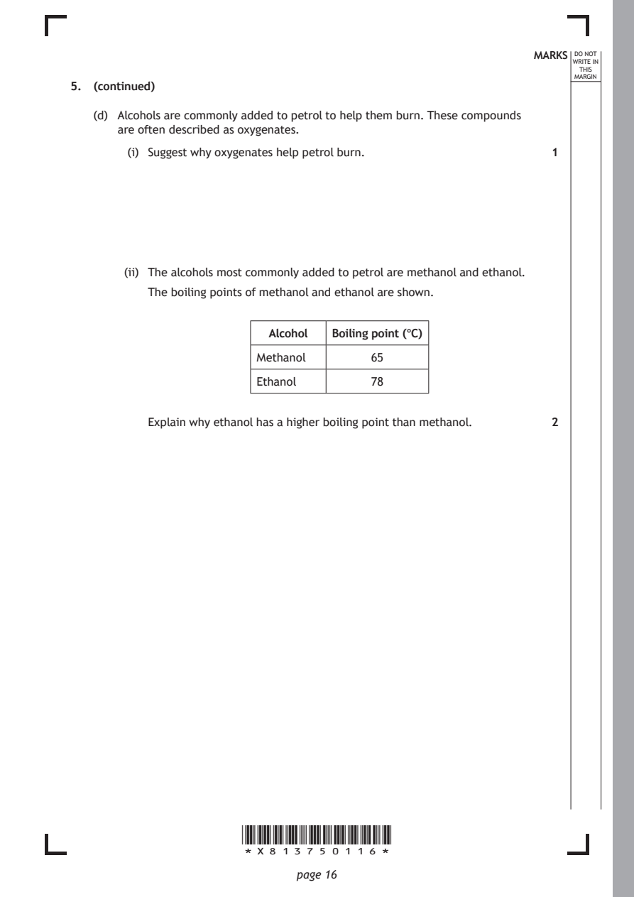
Selectable page text
MARKS _{W}^{D}_{R}^{O}_{I} _{T}^{N}OT
E IN
THIS
MARGIN
5. (continued)
(d) Alcohols are commonly added to petrol to help them burn. These compounds
are often described as oxygenates.
(i) Suggest why oxygenates help petrol burn. 1
(ii) The alcohols most commonly added to petrol are methanol and ethanol.
The boiling points of methanol and ethanol are shown.
Alcohol Boiling point (°C)
Methanol 65
Ethanol 78
Explain why ethanol has a higher boiling point than methanol. 2
*X813750116*
page 16PDF page 17
Paper 2, Question 6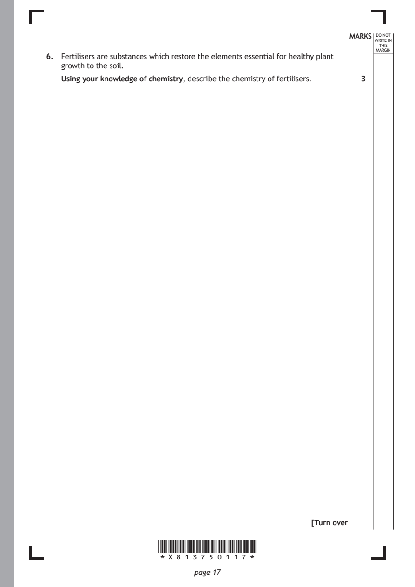
Selectable page text
MARKS _{W}^{D}_{R}^{O}_{I} _{T}^{N}OT
E IN
THIS
MARGIN
6. Fertilisers are substances which restore the elements essential for healthy plant
growth to the soil.
Using your knowledge of chemistry, describe the chemistry of fertilisers. 3
[Turn over
*X813750117*
page 17PDF page 18
Paper 2, Question 7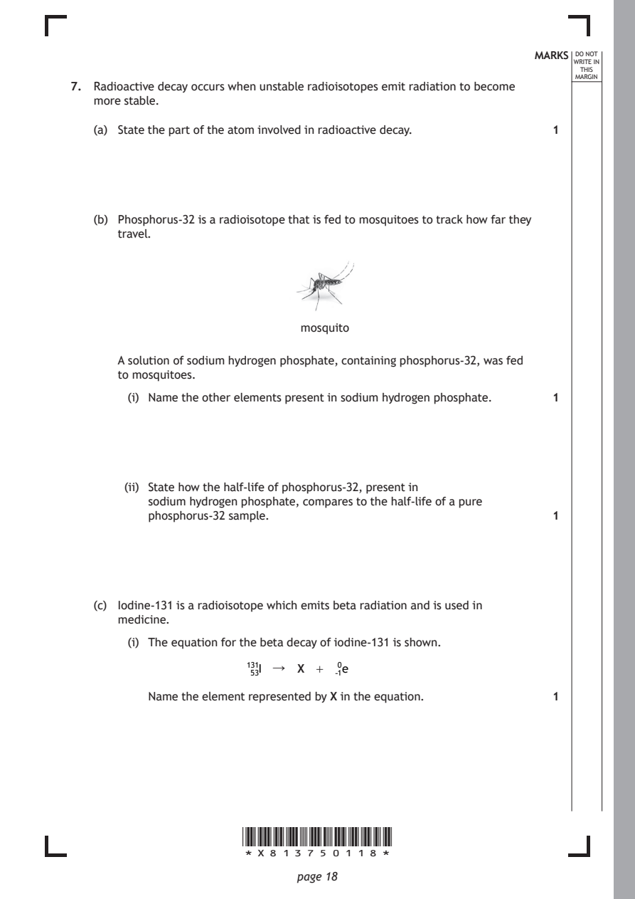
Selectable page text
MARKS _{W}^{D}_{R}^{O}_{I} _{T}^{N}OT
E IN
THIS
MARGIN
7. Radioactive decay occurs when unstable radioisotopes emit radiation to become
more stable.
(a) State the part of the atom involved in radioactive decay. 1
(b) Phosphorus-32 is a radioisotope that is fed to mosquitoes to track how far they
travel.
mosquito
A solution of sodium hydrogen phosphate, containing phosphorus-32, was fed
to mosquitoes.
(i) Name the other elements present in sodium hydrogen phosphate. 1
(ii) State how the half-life of phosphorus-32, present in
sodium hydrogen phosphate, compares to the half-life of a pure
phosphorus-32 sample. 1
(c) Iodine-131 is a radioisotope which emits beta radiation and is used in
medicine.
(i) The equation for the beta decay of iodine-131 is shown.
131I ↓ X + 0e
53 -1
Name the element represented by X in the equation. 1
*X813750118*
page 18PDF page 19
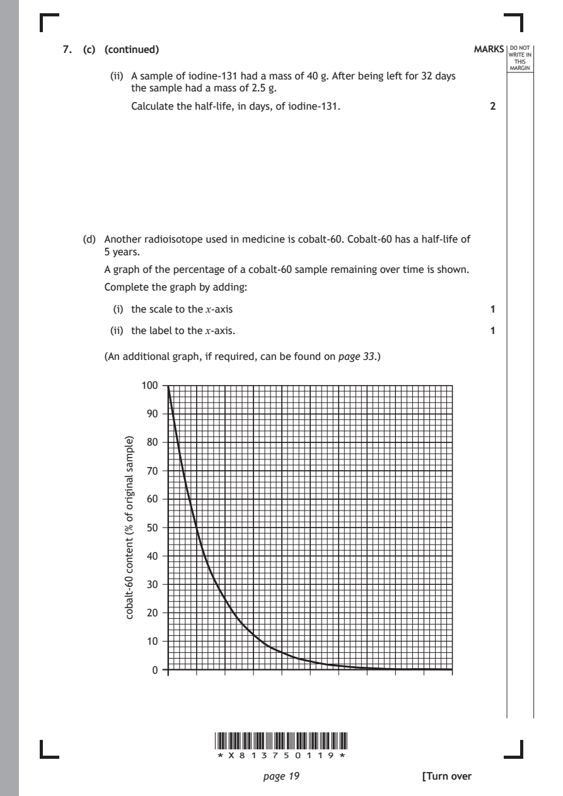
Selectable page text
7. (c) (continued) MARKS _{W}^{D}_{R}^{O}_{I} _{T}^{N}OT
E IN
THIS
MARGIN
(ii) A sample of iodine-131 had a mass of 40 g. After being left for 32 days
the sample had a mass of 2.5 g.
Calculate the half-life, in days, of iodine-131.
(d) Another radioisotope used in medicine is cobalt-60. Cobalt-60 has a half-life of
5 years.
A graph of the percentage of a cobalt-60 sample remaining over time is shown.
Complete the graph by adding:
(i) the scale to the x-axis
(ii) the label to the x-axis.
(An additional graph, if required, can be found on page 33.)
*X813750119*
page 19
)elpmas
lanigiro
fo
%(
tnetnoc
06-tlaboc
2
1
1
100
90
80
70
60
50
40
30
20
10
0
[Turn overPDF page 20
Paper 2, Question 8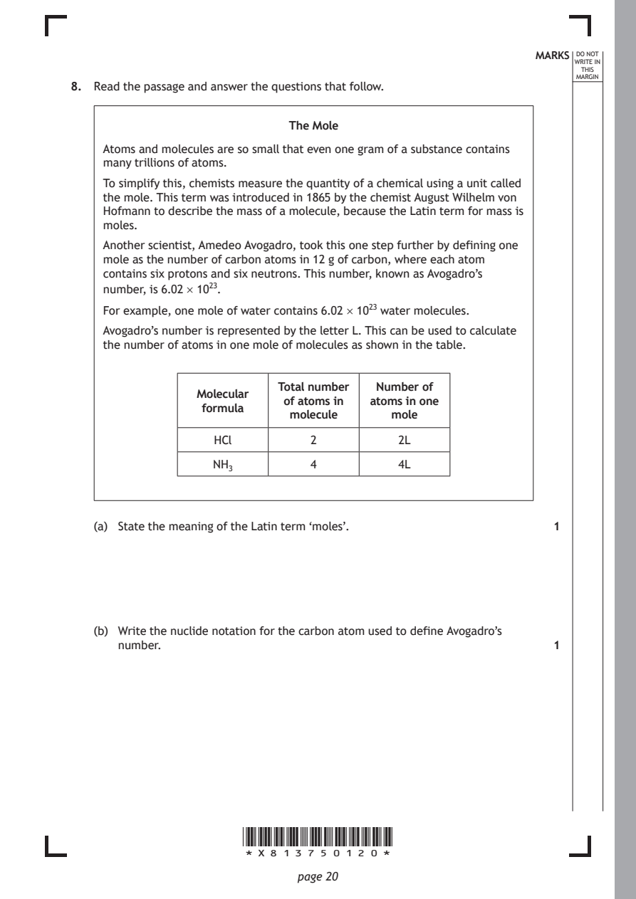
Selectable page text
MARKS _{W}^{D}_{R}^{O}_{I} _{T}^{N}OT
E IN
THIS
MARGIN
8. Read the passage and answer the questions that follow.
The Mole
Atoms and molecules are so small that even one gram of a substance contains
many trillions of atoms.
To simplify this, chemists measure the quantity of a chemical using a unit called
the mole. This term was introduced in 1865 by the chemist August Wilhelm von
Hofmann to describe the mass of a molecule, because the Latin term for mass is
moles.
Another scientist, Amedeo Avogadro, took this one step further by defining one
mole as the number of carbon atoms in 12 g of carbon, where each atom
contains six protons and six neutrons. This number, known as Avogadro’s
number, is 6.02 × 10²³.
For example, one mole of water contains 6.02 × 10²³ water molecules.
Avogadro’s number is represented by the letter L. This can be used to calculate
the number of atoms in one mole of molecules as shown in the table.
Total number Number of
Molecular
of atoms in atoms in one
formula
molecule mole
HCl 2 2L
NH₃ 4 4L
(a) State the meaning of the Latin term ‘moles’. 1
(b) Write the nuclide notation for the carbon atom used to define Avogadro’s
number. 1
*X813750120*
page 20PDF page 21
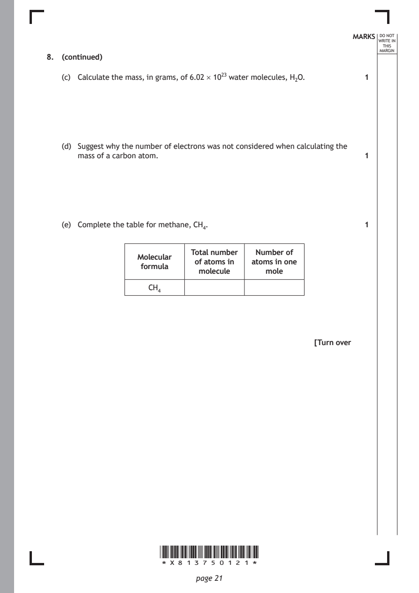
Selectable page text
MARKS _{W}^{D}_{R}^{O}_{I} _{T}^{N}OT
E IN
THIS
MARGIN
8. (continued)
(c) Calculate the mass, in grams, of 6.02 × 10²³ water molecules, H₂O. 1
(d) Suggest why the number of electrons was not considered when calculating the
mass of a carbon atom. 1
(e) Complete the table for methane, CH₄. 1
Total number Number of
Molecular
of atoms in atoms in one
formula
molecule mole
CH₄
[Turn over
*X813750121*
page 21PDF page 22
Paper 2, Question 9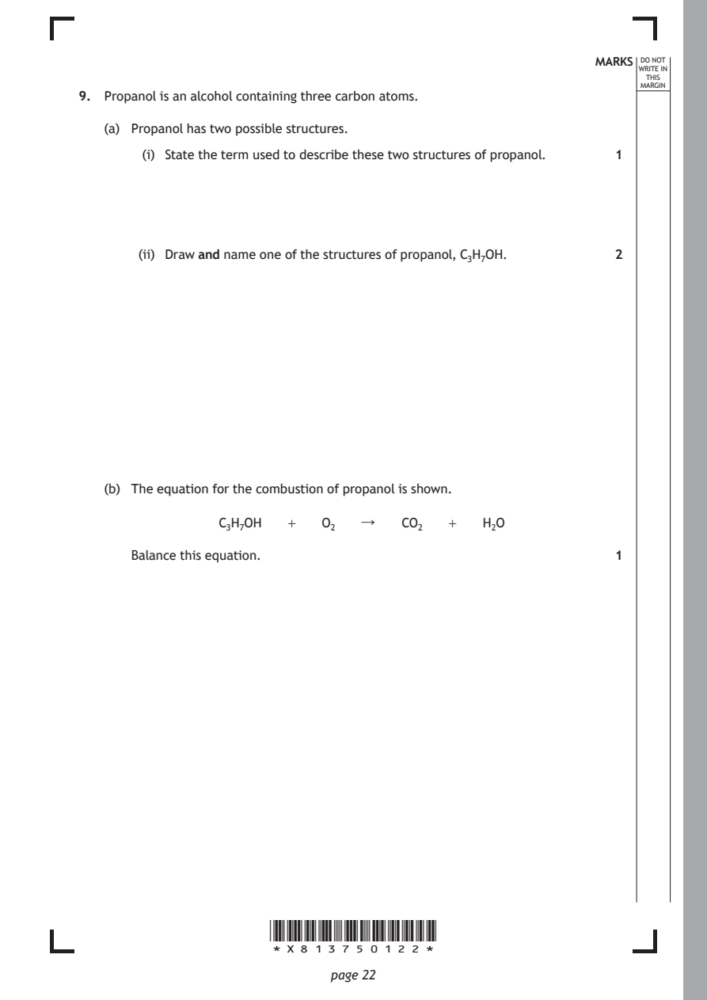
Selectable page text
MARKS _{W}^{D}_{R}^{O}_{I} _{T}^{N}OT
E IN
THIS
MARGIN
9. Propanol is an alcohol containing three carbon atoms.
(a) Propanol has two possible structures.
(i) State the term used to describe these two structures of propanol. 1
(ii) Draw and name one of the structures of propanol, C₃H₇OH. 2
(b) The equation for the combustion of propanol is shown.
C₃H₇OH + O₂ ↓ CO₂ + H₂O
Balance this equation. 1
*X813750122*
page 22PDF page 23
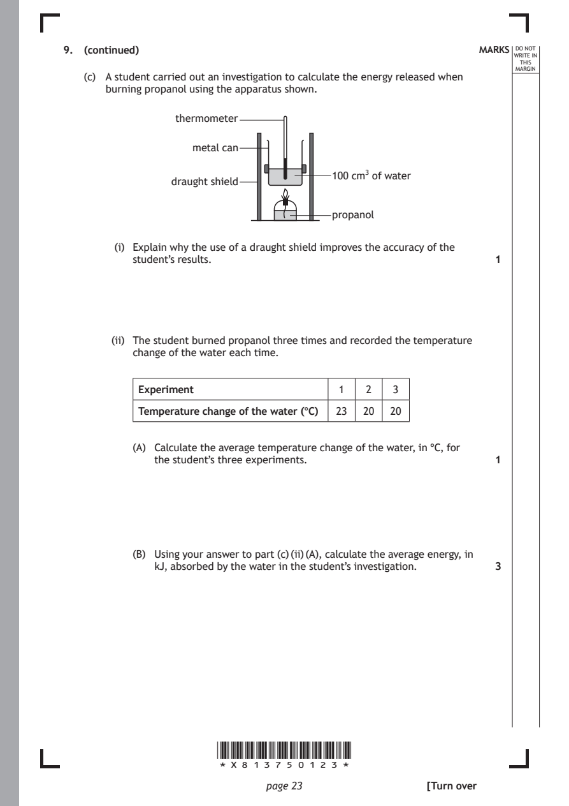
Selectable page text
9. (continued) MARKS _{W}^{D}_{R}^{O}_{I} _{T}^{N}OT
E IN
THIS
MARGIN
(c) A student carried out an investigation to calculate the energy released when
burning propanol using the apparatus shown.
thermometer
metal can
100 cm³ of water
draught shield
propanol
(i) Explain why the use of a draught shield improves the accuracy of the
student’s results. 1
(ii) The student burned propanol three times and recorded the temperature
change of the water each time.
Experiment 1 2 3
Temperature change of the water (°C) 23 20 20
(A) Calculate the average temperature change of the water, in °C, for
the student’s three experiments. 1
(B) Using your answer to part (c) (ii) (A), calculate the average energy, in
kJ, absorbed by the water in the student’s investigation. 3
*X813750123*
page 23 [Turn overPDF page 24
Paper 2, Question 10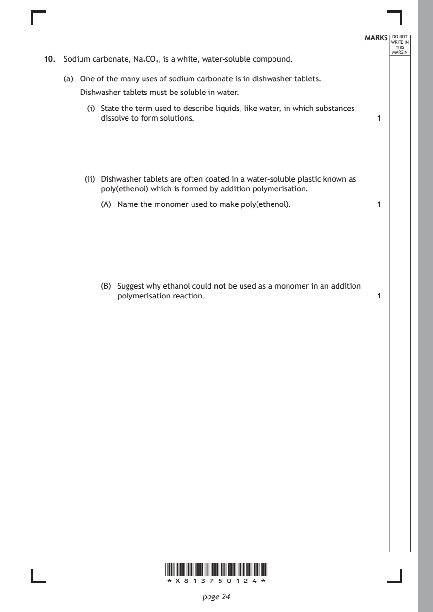
Selectable page text
MARKS _{W}^{D}_{R}^{O}_{I} _{T}^{N}OT
E IN
THIS
MARGIN
10. Sodium carbonate, Na₂CO₃, is a white, water-soluble compound.
(a) One of the many uses of sodium carbonate is in dishwasher tablets.
Dishwasher tablets must be soluble in water.
(i) State the term used to describe liquids, like water, in which substances
dissolve to form solutions. 1
(ii) Dishwasher tablets are often coated in a water-soluble plastic known as
poly(ethenol) which is formed by addition polymerisation.
(A) Name the monomer used to make poly(ethenol). 1
(B) Suggest why ethanol could not be used as a monomer in an addition
polymerisation reaction. 1
*X813750124*
page 24PDF page 25
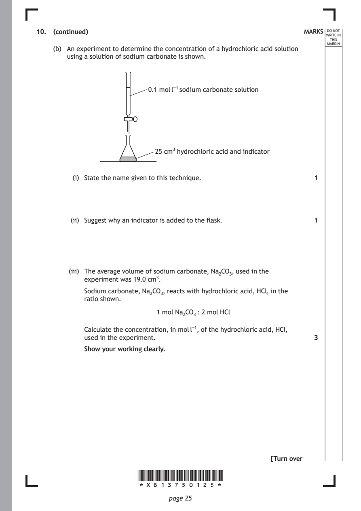
Selectable page text
10. (continued) MARKS _{W}^{D}_{R}^{O}_{I} _{T}^{N}OT
E IN
THIS
MARGIN
(b) An experiment to determine the concentration of a hydrochloric acid solution
using a solution of sodium carbonate is shown.
0.1 mol l⁻¹ sodium carbonate solution
25 cm³ hydrochloric acid and indicator
(i) State the name given to this technique. 1
(ii) Suggest why an indicator is added to the flask. 1
(iii) The average volume of sodium carbonate, Na₂CO₃, used in the
experiment was 19.0 cm³.
Sodium carbonate, Na₂CO₃, reacts with hydrochloric acid, HCl, in the
ratio shown.
1 mol Na₂CO₃ : 2 mol HCl
Calculate the concentration, in mol l⁻¹, of the hydrochloric acid, HCl,
used in the experiment. 3
Show your working clearly.
[Turn over
*X813750125*
page 25PDF page 26
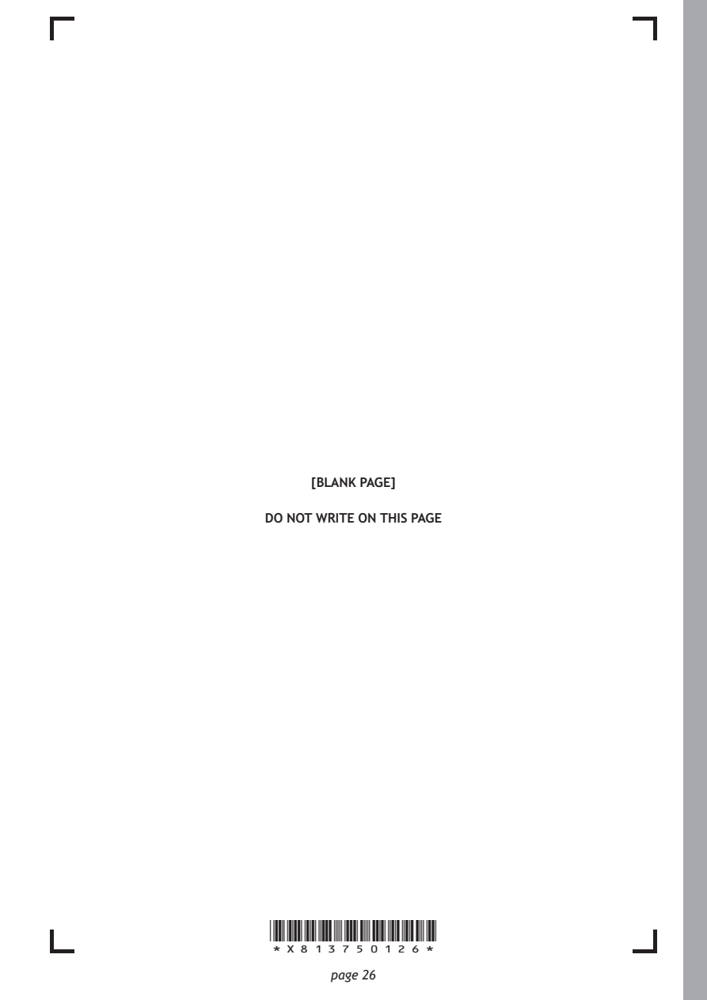
Selectable page text
[BLANK PAGE]
DO NOT WRITE ON THIS PAGE
*X813750126*
page 26PDF page 27
Paper 2, Question 11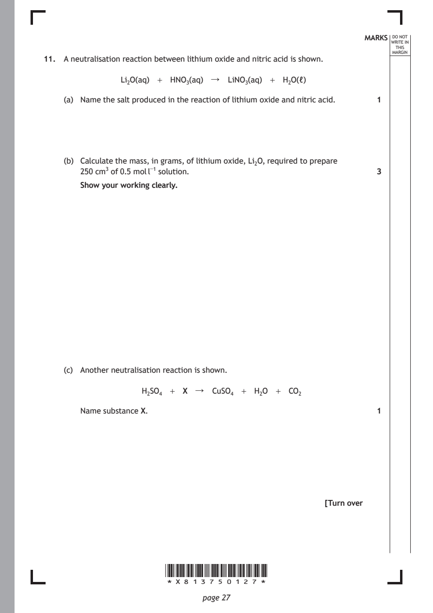
Selectable page text
MARKS _{W}^{D}_{R}^{O}_{I} _{T}^{N}OT
E IN
THIS
MARGIN
11. A neutralisation reaction between lithium oxide and nitric acid is shown.
Li₂O(aq) + HNO₃(aq) ↓ LiNO₃(aq) + H₂O(ℓ)
(a) Name the salt produced in the reaction of lithium oxide and nitric acid. 1
(b) Calculate the mass, in grams, of lithium oxide, Li₂O, required to prepare
250 cm³ of 0.5 mol l⁻¹ solution. 3
Show your working clearly.
(c) Another neutralisation reaction is shown.
H₂SO₄ + X ↓ CuSO₄ + H₂O + CO₂
Name substance X. 1
[Turn over
*X813750127*
page 27PDF page 28
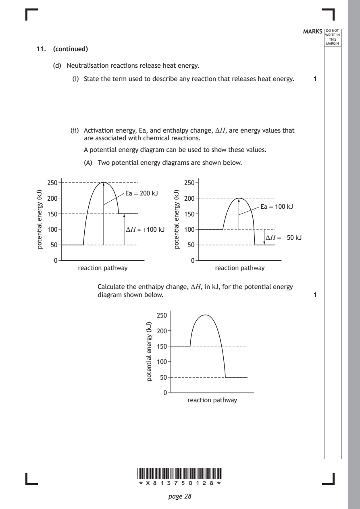
Selectable page text
MARKS _{W}^{D}_{R}^{O}_{I} _{T}^{N}OT
E IN
THIS
MARGIN
11. (continued)
(d) Neutralisation reactions release heat energy.
(i) State the term used to describe any reaction that releases heat energy.
(ii) Activation energy, Ea, and enthalpy change, ΔH, are energy values that
are associated with chemical reactions.
A potential energy diagram can be used to show these values.
(A) Two potential energy diagrams are shown below.
250
Ea = 200 kJ
200
Ea = 100 kJ
150
ΔH = +100 kJ 100
ΔH = −50 kJ
50
0
reaction pathway
*X813750128*
page 28
)Jk(
ygrene
laitnetop
250
200
150
100
50
0
reaction pathway
)Jk(
ygrene
laitnetop
Calculate the enthalpy change, ΔH, in kJ, for the potential energy
diagram shown below.
250
200
150
100
50
0
reaction pathway
)Jk(
ygrene
laitnetop
1
1PDF page 29
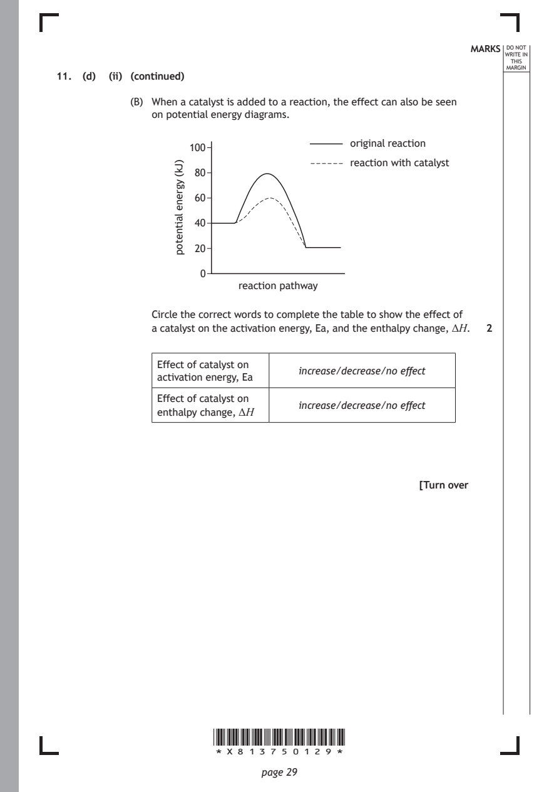
Selectable page text
MARKS _{W}^{D}_{R}^{O}_{I} _{T}^{N}OT
E IN
THIS
MARGIN
11. (d) (ii) (continued)
(B) When a catalyst is added to a reaction, the effect can also be seen
on potential energy diagrams.
100
80
60
40
20
0
reaction pathway
*X813750129*
page 29
)Jk(
ygrene
laitnetop
original reaction
reaction with catalyst
Circle the correct words to complete the table to show the effect of
a catalyst on the activation energy, Ea, and the enthalpy change, ΔH. 2
Effect of catalyst on
increase/decrease/no effect
activation energy, Ea
Effect of catalyst on
increase/decrease/no effect
enthalpy change, ΔH
[Turn overPDF page 30
Paper 2, Question 12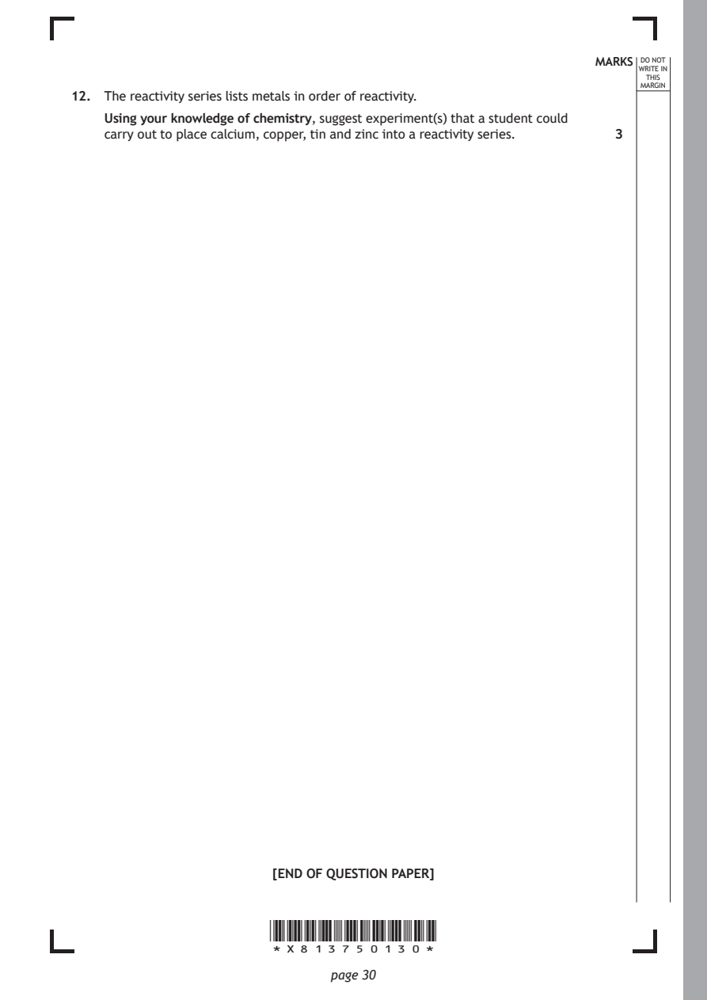
Selectable page text
MARKS _{W}^{D}_{R}^{O}_{I} _{T}^{N}OT
E IN
THIS
MARGIN
12. The reactivity series lists metals in order of reactivity.
Using your knowledge of chemistry, suggest experiment(s) that a student could
carry out to place calcium, copper, tin and zinc into a reactivity series. 3
[END OF QUESTION PAPER]
*X813750130*
page 30PDF page 31
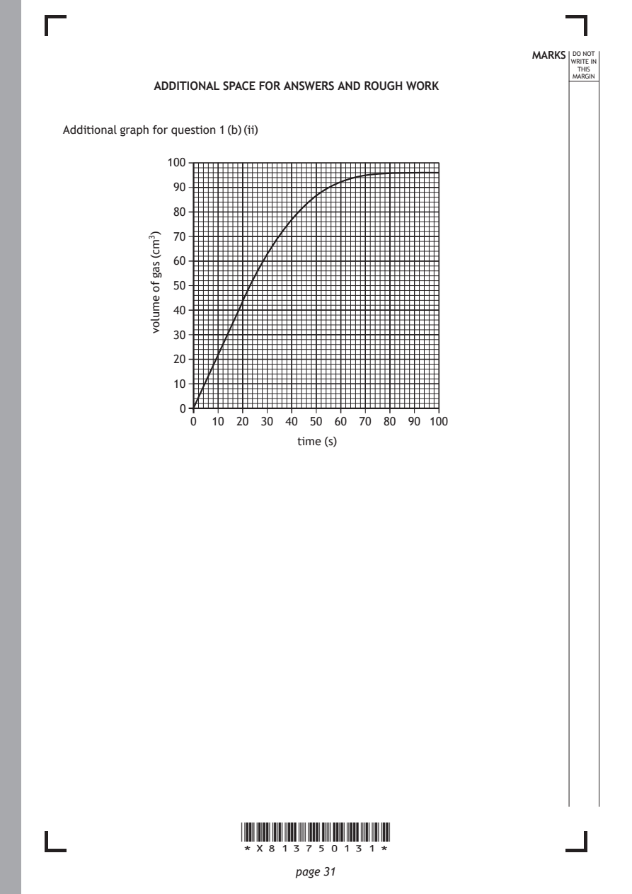
Selectable page text
MARKS _{W}^{D}_{R}^{O}_{I} _{T}^{N}OT
E IN
THIS
MARGIN
ADDITIONAL SPACE FOR ANSWERS AND ROUGH WORK
Additional graph for question 1 (b) (ii)
time (s)
*X813750131*
page 31
)3mc(
sag
fo
emulov
100
90
80
70
60
50
40
30
20
10
0
0 10 20 30 40 50 60 70 80 90 100PDF page 32
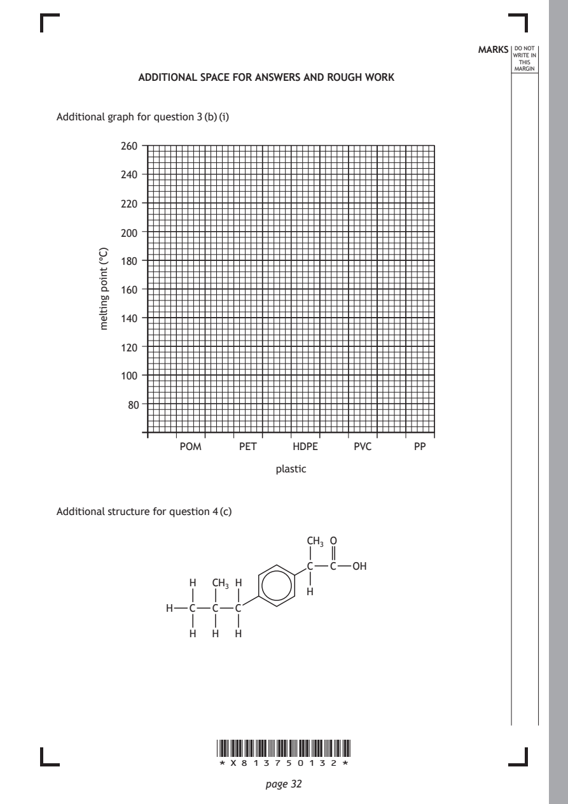
Selectable page text
MARKS _{W}^{D}_{R}^{O}_{I} _{T}^{N}OT
E IN
THIS
MARGIN
ADDITIONAL SPACE FOR ANSWERS AND ROUGH WORK
Additional graph for question 3 (b) (i)
POM PET HDPE PVC PP
plastic
*X813750132*
page 32
)C°(
tniop
gnitlem
260
240
220
200
180
160
140
120
100
80
Additional structure for question 4 (c)
CH₃ O
C C OH
H CH₃ H
H
H C C C
H H HPDF page 33
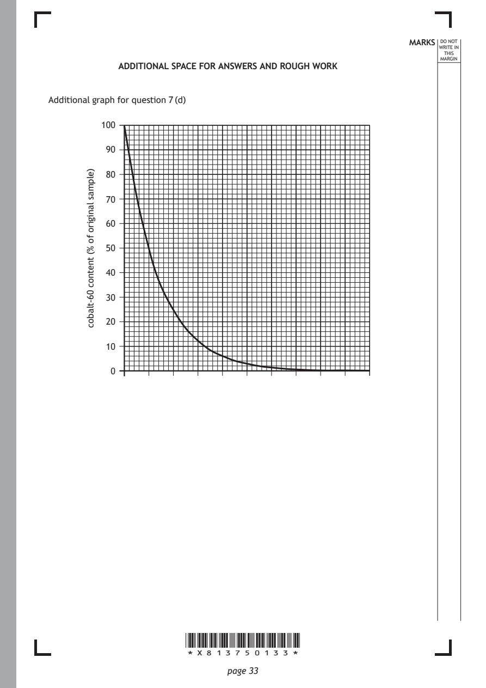
Selectable page text
MARKS _{W}^{D}_{R}^{O}_{I} _{T}^{N}OT
E IN
THIS
MARGIN
ADDITIONAL SPACE FOR ANSWERS AND ROUGH WORK
Additional graph for question 7 (d)
*X813750133*
page 33
)elpmas
lanigiro
fo
%(
tnetnoc
06-tlaboc
100
90
80
70
60
50
40
30
20
10
0PDF page 34
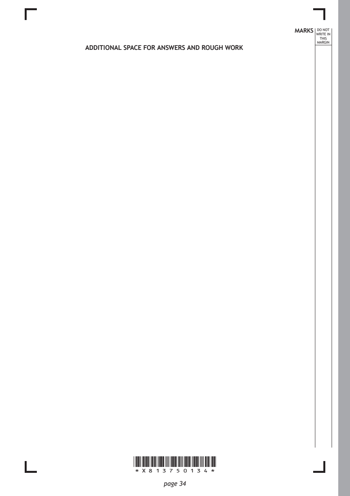
Selectable page text
MARKS _{W}^{D}_{R}^{O}_{I} _{T}^{N}OT
E IN
THIS
MARGIN
ADDITIONAL SPACE FOR ANSWERS AND ROUGH WORK
*X813750134*
page 34PDF page 35

Selectable page text
MARKS _{W}^{D}_{R}^{O}_{I} _{T}^{N}OT
E IN
THIS
MARGIN
ADDITIONAL SPACE FOR ANSWERS AND ROUGH WORK
*X813750135*
page 35PDF page 36
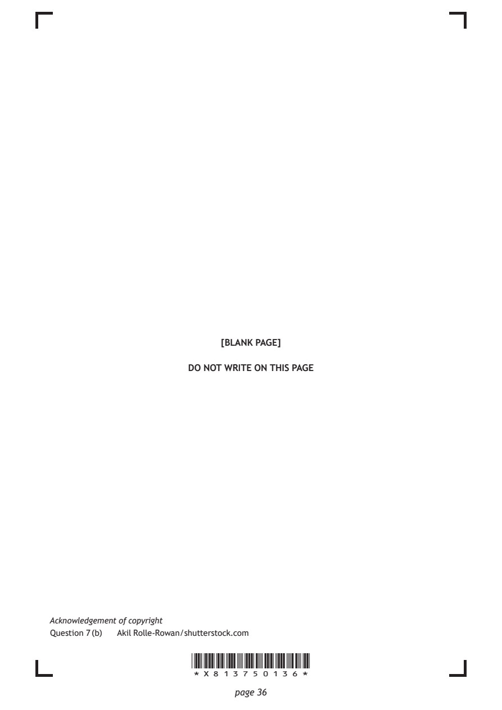
Selectable page text
[BLANK PAGE]
DO NOT WRITE ON THIS PAGE
Acknowledgement of copyright
Question 7 (b) Akil Rolle-Rowan/shutterstock.com
*X813750136*
page 36